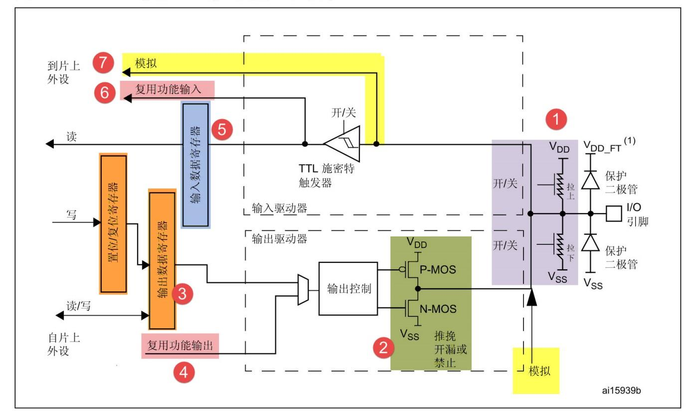
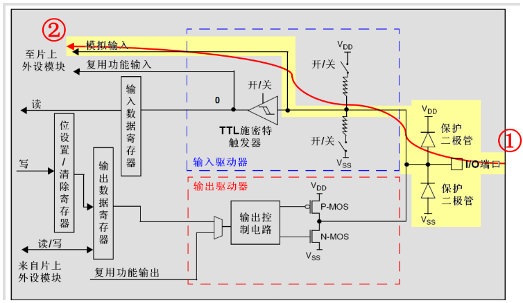
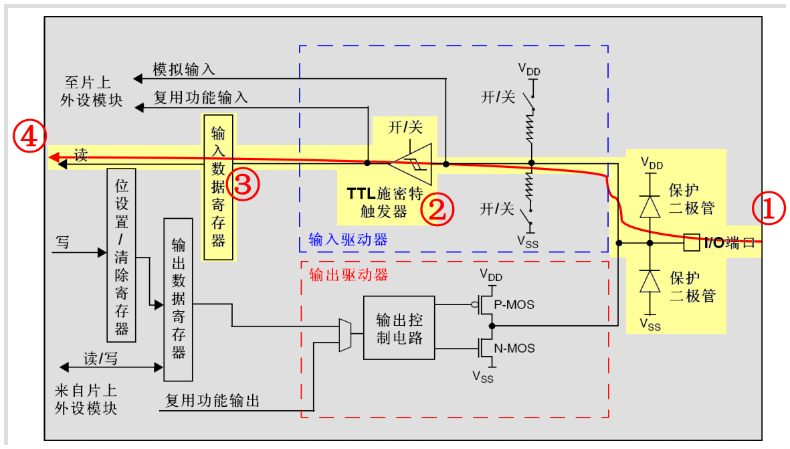
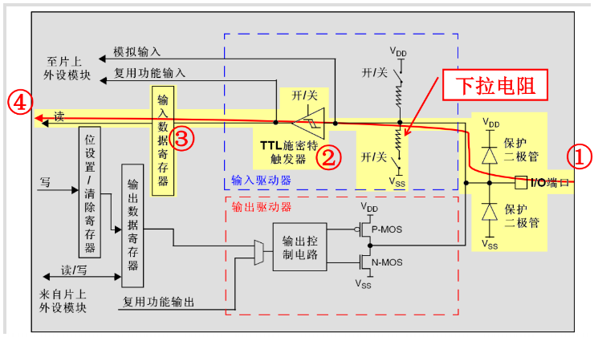
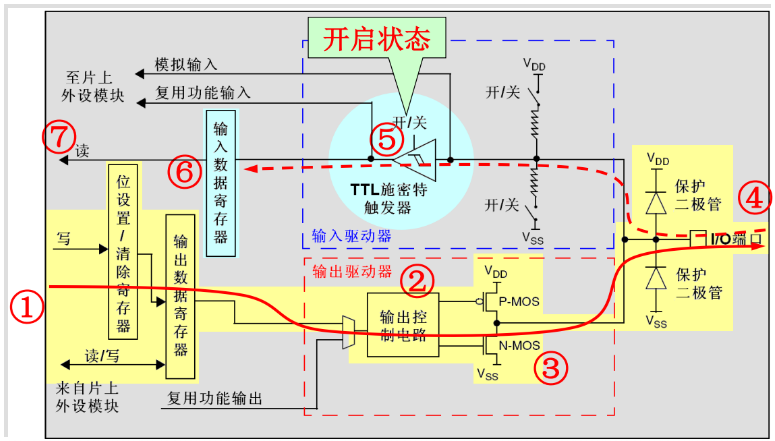
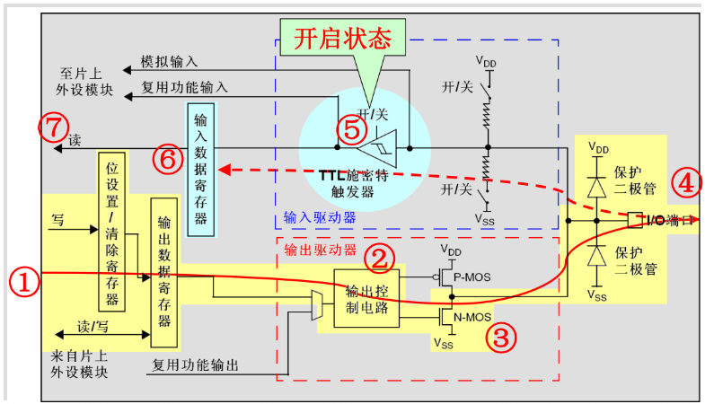
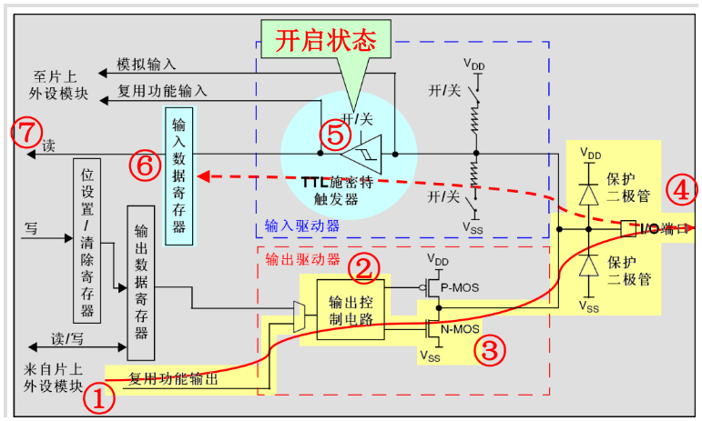

简介
GPIO，General-purpose input/output，译为通用型之输入输出（端口），这是单片机最基础的功能，也是与外界交互的必备方式。GPIO的作用就是通过针脚对外输出高低电平，或者是检测输入电平。Stm32通过控制端口（Port）从而控制针脚（Pin），可以通过针脚对外输出0V或者3.3V的电压，或者是检测针脚处的电压（电平）。
Stm32的GPIO有多种模式：输入浮空，输入上拉，输入下拉，模拟，具有上拉/下拉功能的开漏输出，具有上拉/下拉功能的推挽输出，具有上拉/下拉功能的复用功能推挽，具有上拉/下拉功能的复用功能开漏。简而言之，就是：
- 浮空/上拉/下拉输入
- 具有上拉/下拉功能的推挽/开漏输出
- 模拟
- 复用推挽/开漏输出
原理
结构框图
整体分析

这个框图分为几个部分，上拉下拉电阻部分，P-MOS/N-MOS管部分，输入/输出部分。
上拉下拉电阻
这个部分包含上拉电阻，下拉电阻，两个保护二极管。
两个保护二极管用于防止引脚外部过高或过低的电压输入，当引脚电压高于VDD_FT时，上方的二极管导通，当引脚电压低于VSS时，下方的二极管导通，防止不正常电压引入芯片导致芯片烧毁。
输入电压的范围是VIL ~ VIH。
VDD是标准工作电压，范围是2 ~ 3.6V。
VIL，是输入低电平电压，范围是-0.5~0.8(0.35VDD)，单位：V。
VIH，是输入高电平电压，范围是2(0.65VDD) ~ VDD+0.5/5.5，单位：V。
对于标准I/O口来说，输入高电平电压的最大值是VDD+0.5，即2.5 ~ 4.1V。
对于FT的I/O口来说，输入高电平电压的最大值是5.5V。
一般来说，默认输入低电平电压为0V，默认输入高电平电压为3.3V或5V，因此，输入电压的范围可以简单理解为0~3.3/5V。
上拉下拉电阻所起的作用是控制引脚默认状态，GPIO的输入输出，均可以设置为上拉、下拉、浮空模式。
浮空模式是“既不上拉也不下拉”，此时检测的引脚电压不确定，为1点几V。
上拉模式控制引脚电压为高电平，也就是3.3V/5V。
下拉模式控制引脚电平为低电平，也就是0V。
输出驱动器
输出驱动器由P-MOS管和N-MOS管组成，接受输出数据寄存器和复用输出的数据，控制对外输出高低电平。电路的输出方式有推挽输出和开漏输出。
推挽输出可以输出准确的低电平0V和高电平3.3V。
要对外输出高电平时，上方的P-MOS导通，下方的N-MOS关闭；要对外输出低电平时，N-MOS管导通，P-MOS关闭。当引脚高低电平切换时，两个管子轮流导通，一个负责灌电流，一个负责拉电流，使其负载能力和开关速度都比普通的方式有很大的提高。
开漏输出仅能输出低电平0V，不能输出高电平。
输出为0时，对外输出低电平时，P-MOS管关闭，N-MOS管导通，使输出接地；输出为1时，P-MOS管和N-MOS管都关闭，对外为高阻态。用开漏输出时，要输出高电平，必须要加上拉电阻，此时电压为上拉电阻所接电源的电压。开漏输出最主要的功能是“线与”的特性，但同一条线中，一个引脚为低电平，整条线路均为低电平（0V）。
输入驱动器
输入驱动器部分有一个触发器，在输入模式下，引脚的电压输入到触发器上，触发器将输入的模拟信号转换成数字信号，即转化成高电平或低电平输出到输入数据寄存器中，即得到输出数据1或0。
模拟模式下，输入的电压并不经过触发器，输入的电压直接进入到片上外设，一般用于ADC这种需要直接读取外部电压的情况。
输入输出控制部分
输入数据寄存器通过触发器把外部输入的电压信号转换成数字信号，并储存起来以供读取。
输出数据寄存器根据内部写入到置位/复位寄存器输出的数据，控制输出驱动器输出相应的高低电平。
片上外设也可不经过输入输出数据寄存器，通过模拟输入、复用功能输入、复用功能输出直接读取输入驱动器的电平或通过输出驱动器进行输出。
各模式信号流分析
模拟输入

模拟输入模式下，触发器关闭，上拉电阻、下拉电阻断开。
引脚电压信号直接输入到片上外设ADC内部。
输入数据寄存器不能正常读取引脚电平状态，CPU不能在输入数据寄存器上读到有效的数据。
浮空输入

浮空输入模式下，上拉、下拉电阻断开，触发器开启。
引脚电压信号直接输入到触发器，然后到输入数据寄存器。
CPU可直接从输入数据寄存器读取引脚电平状态，因为缺少上下拉电阻，数据可能不准确。
上拉、下拉输入

上拉下拉输入模式下，上拉、下拉电阻接通，触发器开启。
引脚电压信号经过上拉、下拉电阻，通过触发器，输入到输入数据寄存器中。
CPU可直接从输入数据寄存器读取引脚电平状态。
模拟输出
模拟输入模式下，上拉、下拉电阻断开，触发器开启。
CPU通过片上外设DAC直接输出对应的电压到引脚，不经过输出驱动器和上下拉电阻。
推挽输出

推挽输出模式下，上拉、下拉电阻接通，触发器开启，P-MOS/N-MOS管导通。
CPU写入置位/复位寄存器及输出数据寄存器，当写入数据为1时，输出控制电路通过P-MOS管对外输出高电平，N-MOS管不工作；当写入数据为0时，输出控制电路通过N-MOS管对外输出低电平，P-MOS管不工作。
此时，触发器处于开启状态，CPU也可直接从输入数据寄存器读取引脚电平状态。
开漏输出

开漏输出模式下，上拉、下拉电阻接通，触发器开启，P-MOS管关闭。
CPU写入置位/复位寄存器及输出数据寄存器，当写入数据为1时，N-MOS管关闭，引脚电平由外部上拉电阻决定，当写入数据为0时，N-MOS管导通，输出控制电路通过N-MOS管对外输出低电平，P-MOS管一直不工作。
此时，触发器处于开启状态，CPU可直接从输入数据寄存器读取引脚电平状态。
复用推挽/开漏输出

复用推挽/开漏输出模式下，上拉、下拉电阻接通，触发器开启，MOS管按模式进行导通或关闭。
此时，输出控制来自片上外设模块，CPU不能通过输出数据寄存器控制输出控制电路对外输出高低电平。片上外设直接控制输出控制电路对外输出高低电平。
此时，触发器处于开启状态，CPU可直接从输入数据寄存器读取引脚电平状态。
GPIO模式详解
输入模式
输入模式有浮空输入、上拉输入、下拉输入、模拟输入四种。
在前三种输入模式下，CPU可通过输入数据寄存器GPIOx_IDR读取I/O状态，数据寄存器每个1个AHB时钟中期更新一次，同时，也可产生相应的中断。
模拟输入模式CPU不可直接读取I/O状态，引脚电压信号直接导入片上外设ADC中。
浮空输入模式一般用于通信协议的I2C、USART、SPI的接收端。
上拉输入模式一般用于检测按键的输入。当按键未按下时，引脚经过上拉电阻保持在高电平状态；当按键按下时，引脚由高电平下降到低电平。
下拉输入模式默认低电平，也可以应用于按键的输入检测。
模拟输入一般用于通过ADC测量引脚外部电压。
输出模式
输出模式有推挽输出、开漏输出、复用推挽/开漏输出、模拟输出四种模式。
推挽输出模式一般应用于输出电平为0或者3.3V的场合，比如LED的控制等。
推挽模式可读取引脚电平状态。
开漏输出模式一般用于高电压的场合，通过外部加一个上拉电阻，电压为5V，当开漏输出为1，即高阻态时，由上拉电阻和电源对外输出5V电平。开漏输出也用于需要“线与”功能的场合。
使用开漏模式输出时，都需要接外部上拉电阻。
开漏模式可读取引脚电平状态。
复用模式一般根据具体功能来配置。
复用推挽输出一般用于USART、SPI、CAN等场合。
复用开漏输出一般用于I2C、SMBUS等场合。
复用模式可读取引脚电平状态。
模拟输出一般用于DAC模式，对外输出精确的电压值。此时输入功耗变为0，无法读取引脚电压。
输出模式下，有三种输出速度选择，2MHz、10MHz和50MHz。这个速度是指GPIO口驱动电路的响应速度，而不是输出信号的速度，输出信号的速度与程序有关。通过选择速度来选择不同的输出驱动模块，达到最佳的噪声控制和降低功耗的目的。
寄存器配置
stm32一共有10个寄存器用于GPIO的配置，分别是：
- GPIO 端口模式寄存器 (GPIOx_MODER)
- GPIO 端口输出类型寄存器 (GPIOx_OTYPER)
- GPIO 端口输出速度寄存器 (GPIOx_OSPEEDR)
- GPIO 端口上拉/下拉寄存器 (GPIOx_PUPDR)
- GPIO 端口输入数据寄存器 (GPIOx_IDR)
- GPIO 端口输出数据寄存器 (GPIOx_ODR)
- GPIO 端口置位/复位寄存器 (GPIOx_BSRR)
- GPIO 端口配置锁定寄存器 (GPIOx_LCKR)
- GPIO 复用功能低位寄存器 (GPIOx_AFRL)
- GPIO 复用功能高位寄存器 (GPIOx_AFRH)
可以按字(32位)、半字(16位)、字节(8位)模式写入外设寄存器。
一组寄存器（10个）可以控制一组GPIO的16个引脚（I/O口）。
GPIO 端口模式寄存器 (GPIOx_MODER) ，只写，用于配置I/O模式：输入模式(00)、通用输出模式(01)、复用功能模式(10)、模拟模式(11)。
GPIO 端口输出类型寄存器 (GPIOx_OTYPER) ，只写，用于配置I/O输出模式：推挽输出(0)，开漏输出(1)。
GPIO 端口输出速度寄存器 (GPIOx_OSPEEDR) ，只写，用于配置I/O输出速度：低速(00)、中速(01)、快速(10)、高速(11)。
GPIO 端口上拉/下拉寄存器 (GPIOx_PUPDR) ，只写，用于配置I/O输出是否需要上下拉：无上下拉(00)、上拉(01)、下拉(10)、保留(11)。
GPIO 端口输入数据寄存器 (GPIOx_IDR) ，只读，位[15：0](IDR0..15)记录引脚输入状态，即端口输入数据(Port input data)，高电平(1)、低电平(0)。
GPIO 端口输出数据寄存器 (GPIOx_ODR)，读写，位[15:0](ODR0..15)记录引脚输出状态，即端口输出数据 (Port output data)，高电平(1)、低电平(0)。
GPIO 端口置位/复位寄存器 (GPIOx_BSRR)，只写，位[31:16](BR0..15)写1复位（0）对应的ODRx位；位[15:0](BS0..15)写1置位（1）对应的ODRx位。
GPIO 端口配置锁定寄存器 (GPIOx_LCKR)，读写，用于锁定GPIO的配置，将 LOCK 序列应用到某个端口位后，在执行下一次 MCU 复位或外设复位之前，将无法对该端口位的值进行修改。
位16，LCKK，锁定键 (Lock key) ，用于锁定锁定寄存器 (GPIOx_LCKR)，可以用锁定写序列对其修改，此时只允许使用字访问(32位)，且不能更改位[15:0]的值，位16的值如下：写入1-0-1->读取0-1，一共5步。
位15:0，端口 x 锁定位 y (Port x lock bit y) (y= 0..15)，0为未锁定，1为已锁定.
GPIO 复用功能低位寄存器 (GPIOx_AFRL)和GPIO 复用功能高位寄存器 (GPIOx_AFRH)，只写，用于复用功能的选择。
总结一下，通过10个寄存器，我们可以对控制一组GPIO的16个引脚（I/O口），进行以下操作
- 配置模式：输入、输出、复用、模拟
- 配置输出类型：推挽、开漏
- 配置上下拉模式：无上下拉、上拉、下拉、保留
- 读取输入数据：1为高电平，0为低电平
- 读写输出数据：1为高电平，0为低电平
- 置位/复位输出状态：BRy写1复位，BSy写1置位
- 锁定GPIO状态：写1锁定
- 选择相应的复用功能
GPIO库的使用
HAL库
HAL 库中对GPIO相关的操作在stm32fxxx_hal_gpio.c/h，stmfxxx_hal_gpio_ex.c/h 里面，后面两个主要是配置GPIO中断的功能，暂且略过。现在主要分析stmfxxx_hal_gpio.c/h的库函数:
- HAL_GPIO_Init
- HAL_GPIO_DeInit
- HAL_GPIO_ReadPin
- HAL_GPIO_WritePin
- HAL_GPIO_TogglePin
- HAL_GPIO_LockPin
- HAL_GPIO_EXTI_IRQHandler
- HAL_GPIO_EXTI_Callback
初始化/去初始化
void HAL_GPIO_Init(GPIO_TypeDef *GPIOx, GPIO_InitTypeDef *GPIO_Init);
这是用于初始化GPIO的库函数。
输入参数是两个结构体，
第一个是GPIOx，用于指定GPIO端口(Port)，值为GPIOA~E不等，具体要看具体芯片型号。
第二个是GPIO_Init，它是GPIO初始化结构体，用于指定GPIO的引脚，模式，上下拉，速度。
引脚(Pin)：GPIO_PIN_0 ~ GPIO_PIN_15，或是GPIO_PIN_All。
模式(Mode)：
- 输入 GPIO_MODE_INPUT
- 推挽输出 GPIO_MODE_OUTPUT_PP)
- 开漏输出 GPIO_MODE_OUTPUT_OD)
- 复用推挽输出 GPIO_MODE_AF_PP)
- 复用开漏输出 GPIO_MODE_AF_OD)
- 复用输入 GPIO_MODE_AF_INPUT
- 模拟 GPIO_MODE_ANALOG
- 上升沿中断 GPIO_MODE_IT_RISING
- 下降沿中断 GPIO_MODE_IT_FALLING
- 跳变沿中断 GPIO_MODE_IT_RISING_FALLING
- 上升沿事件 GPIO_MODE_EVT_RISING
- 下降沿事件 GPIO_MODE_EVT_FALLING
- 跳变沿事件 GPIO_MODE_EVT_RISING_FALLING
上下拉(Pull)：
- 无上下拉 GPIO_NOPULL
- 上拉 GPIO_PULLUP
- 下拉 GPIO_PULLDOWN
速度(Speed):
- 低速 GPIO_SPEED_FREQ_LOW
- 中速 GPIO_SPEED_FREQ_MEDIUM
- 高速 GPIO_SPEED_FREQ_HIGH
void HAL_GPIO_DeInit(GPIO_TypeDef *GPIOx, uint32_t GPIO_Pin)；
这是去初始化的库函数，需要指定对应的端口和引脚。
输入输出操作
GPIO_PinState HAL_GPIO_ReadPin(GPIO_TypeDef *GPIOx, uint16_t GPIO_Pin)；
函数用于读取指定管脚的状态，返回值为GPIO_PIN_RESET(0)或GPIO_PIN_SET(1)。
void HAL_GPIO_WritePin(GPIO_TypeDef *GPIOx, uint16_t GPIO_Pin, GPIO_PinState PinState)；
函数用于控制指定管脚输出，操作的是BSRR(置位/复位)寄存器，需要指定对应的端口、管脚，还有欲写入的状态：GPIO_PIN_RESET(0)或GPIO_PIN_SET(1)。
void HAL_GPIO_TogglePin(GPIO_TypeDef *GPIOx, uint16_t GPIO_Pin)；
函数用于翻转指定管脚的输出状态，操作的是ODR(输出数据)寄存器。
HAL_StatusTypeDef HAL_GPIO_LockPin(GPIO_TypeDef *GPIOx, uint16_t GPIO_Pin)；
函数用于锁定指定管脚的状态，操作的是LCKR(锁定)寄存器，返回值是HAL_OK或HAL_ERROR。
中断配置
void HAL_GPIO_EXTI_IRQHandler(uint16_t GPIO_Pin)；
这是GPIO中断的处理函数，将会清除中断标志位，并且进入回调函数。
__weak void HAL_GPIO_EXTI_Callback(uint16_t GPIO_Pin)；
这是GPIO中断的回调函数，可以重定义，无需清楚中断标志，直接在里面写相应的用户操作即可。
HAL库总结
HAL库的GPIO部分，可以实现以下功能：
- 初始化/去初始化 HAL_GPIO_Init或HAL_GPIO_DeInit
- 读取引脚状态 HAL_GPIO_WritePin
- 输出引脚状态 HAL_GPIO_ReadPin
- 翻转引脚状态 HAL_GPIO_TogglePin
- 锁定引脚状态 HAL_GPIO_LockPin
标准库
标准库中对GPIO的操作在stm32fxxx_gpio.c/h中，包含以下库函数
- GPIO_Init
- GPIO_DeInit
- GPIO_AFIODeInit
- GPIO_StructInit
- GPIO_ReadInputDataBit
- GPIO_ReadInputData
- GPIO_ReadOutputDataBit
- GPIO_ReadOutputData
- GPIO_SetBits
- GPIO_ResetBits
- GPIO_WriteBit
- GPIO_Write
- GPIO_PinLockConfig
- GPIO_EventOutputConfig
- GPIO_EventOutputCmd
- GPIO_PinRemapConfig
- GPIO_EXTILineConfig
- GPIO_ETH_MediaInterfaceConfig
初始化/去初始化
void GPIO_Init(GPIO_TypeDef* GPIOx, GPIO_InitTypeDef* GPIO_InitStruct);
这是用于初始化GPIO的库函数，输入参数：
一是GPIOx，用于指定GPIO端口(Port)，值为GPIOA~F不等；
二是GPIO_InitStruct，这是GPIO初始化结构体，用于指定GPIO的引脚(Pin)，速度(Speed)，模式(Mode)。
引脚(GPIO_Pin)，值为GPIO_Pin_0~15/ALL，一共16个引脚。
速度(GPIO_Pin_Speed)，值为GPIO_Speed_10MHz/GPIO_Speed_2MHz/GPIO_Speed_50MHz。
模式(GPIO_Mode)有以下几种：
- 模拟输入 GPIO_Mode_AIN
- 浮空输入 GPIO_Mode_IN_FLOATING
- 下拉输入 GPIO_Mode_IPD
- 上拉输入 GPIO_Mode_IPU
- 开漏输出 GPIO_Mode_Out_OD = 0x14
- 推挽输出 GPIO_Mode_Out_PP
- 复用开漏输出 GPIO_Mode_AF_OD
- 复用推挽输出 GPIO_Mode_AF_PP
void GPIO_StructInit(GPIO_InitTypeDef* GPIO_InitStruct)
这是初始化“GPIO初始化结构体(GPIO_InitTypeDef)”的函数，初始化后的结果为 GPIO_Pin_All, GPIO_Speed_2MHz, GPIO_Mode_IN_FLOATING
void GPIO_DeInit(GPIO_TypeDef* GPIOx)
这是去初始化的库函数，去除指定GPIO端口的所有引脚的初始化。
void GPIO_AFIODeInit(void)
这是去除GPIO复用功能的初始化函数，用于关闭复用功能的时钟，从而禁止复用功能的开启。
读取
uint8_t GPIO_ReadInputDataBit(GPIO_TypeDef* GPIOx, uint16_t GPIO_Pin)
读取指定单个引脚Pin)(的输入电平数据，返回值为Bit_SET(1)/Bit_RESET(0)。
uint16_t GPIO_ReadInputData(GPIO_TypeDef* GPIOx)
读取指定端口(Port)一共16个引脚的输入电平数据，返回值为(uint16_t)GPIOx->IDR。
uint8_t GPIO_ReadOutputDataBit(GPIO_TypeDef* GPIOx, uint16_t GPIO_Pin)
读取指定单个引脚(Pin)的输出电平数据，返回值为Bit_SET(1)/Bit_RESET(0)。
uint16_t GPIO_ReadOutputData(GPIO_TypeDef* GPIOx)
读取指定端口(Port)一共16个引脚的输出电平数据，返回值为(uint16_t)GPIOx->ODR。
输出
void GPIO_SetBits(GPIO_TypeDef* GPIOx, uint16_t GPIO_Pin)
置位指定引脚(Pin)的输出数据，使其输出高电平(1)。
void GPIO_ResetBits(GPIO_TypeDef* GPIOx, uint16_t GPIO_Pin)
复位指定引脚(Pin)的输出数据，使其输出低电平(0)。
void GPIO_WriteBit(GPIO_TypeDef* GPIOx, uint16_t GPIO_Pin, BitAction BitVal)
指定单个引脚(Pin)的输出数据，使其输出高电平(Bit_SET)或低电平(Bit_RESET)。
void GPIO_Write(GPIO_TypeDef* GPIOx, uint16_t PortVal)
指定端口(Port)的输出数据，使其输出高电平(Bit_SET)或低电平(Bit_RESET)。
事件管理
void GPIO_EventOutputConfig(uint8_t GPIO_PortSource, uint8_t GPIO_PinSource)
GPIO输出EVENTOUT信号配置，参数为端口(GPIO_PortSourceGPIOx)和 引脚(GPIO_PinSourcex)。
void GPIO_EventOutputCmd(FunctionalState NewState)
GPIO输出EVENTOUT信号使能，参数NewState是使能参数，值为关闭(DISABLE)或开启(ENABLE)。
中断管理
void GPIO_EXTILineConfig(uint8_t GPIO_PortSource, uint8_t GPIO_PinSource)
GPIO中断配置，指定端口(GPIO_PortSourcex)和引脚(GPIO_PinSource)开启外部中断功能。
其他
void GPIO_PinLockConfig(GPIO_TypeDef* GPIOx, uint16_t GPIO_Pin)
锁定单个引脚(Pin)的状态
void GPIO_PinRemapConfig(uint32_t GPIO_Remap, FunctionalState NewState)
GPIO功能重映射的配置和使能，在开启复用功能的时候需要用到，参数GPIO_Remap为各功能的选择，NewState是使能参数，值为关闭(DISABLE)或开启(ENABLE)
void GPIO_ETH_MediaInterfaceConfig(uint32_t GPIO_ETH_MediaInterface)
GPIO以太网功能配置，配置内部的以太网MAC使用外部的MII接口还是RMII接口的收发器(PHY)。
标准库总结
标准库中GPIO库包含以下功能：
- 初始化/去初始化
- 读取/写入/锁存 单个引脚(Pin)或者端口(Port)的电平数据
- 事件/中断功能配置
- 以太网功能配置
HAL库与标准库的比较
HAL库是ST官方目前大力推行的库，能应用于全系列的芯片，并可以用STM32CubeMX软件快速开发。HAL多了很多抽象层，方便开发，集成度高。但由于集成度太高，有时单靠库函数无法完成某些功能的开发，反而需要对寄存器编程。
标准库是ST比较早期的库，仅能应用于早期的芯片。标准库仅对寄存器进行封装，库函数能实现的操作都比较简单，应用时比较繁琐。由于标准库比较早期，早期芯片寄存器于现在的芯片的寄存器相比也有变化，因此，标准库对新出的芯片不支持，老芯片的操作与HAL库也不大相同。
GPIO库里面，HAL库和标准库均能完成对单个引脚的初始化、输入输出锁存、中断管理的操作，但是标准库比HAL库多了一些功能:
- 同时对同一端口(Port)的16个引脚(Pin)的状态进行读取、写入
- 事件信号的功能功能配置
- 以太网功能配置